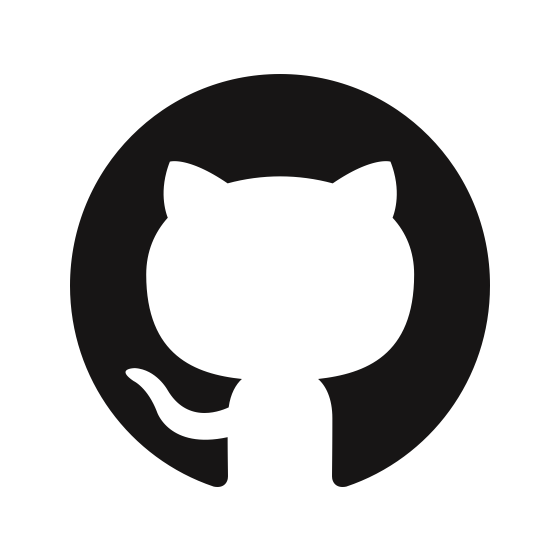
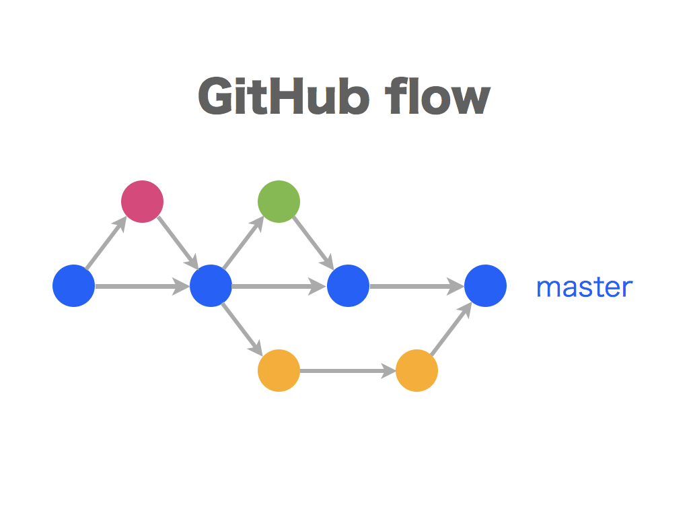
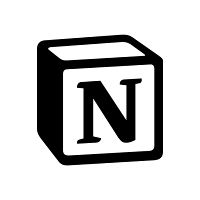
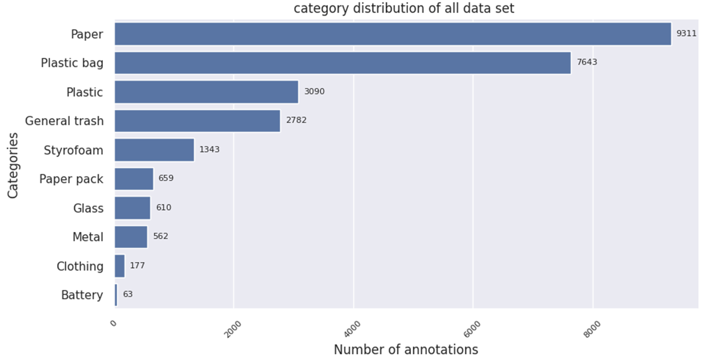
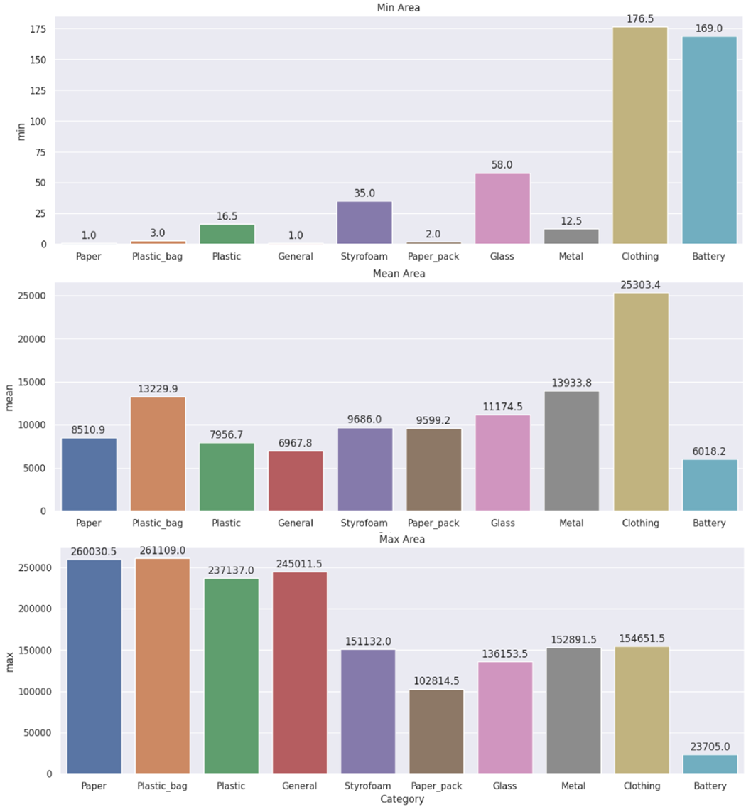
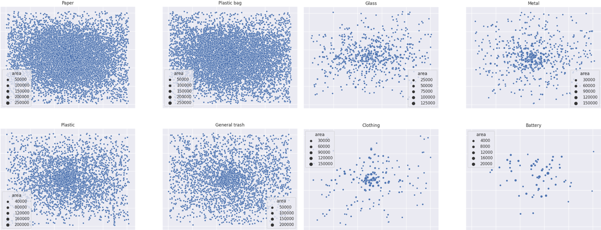
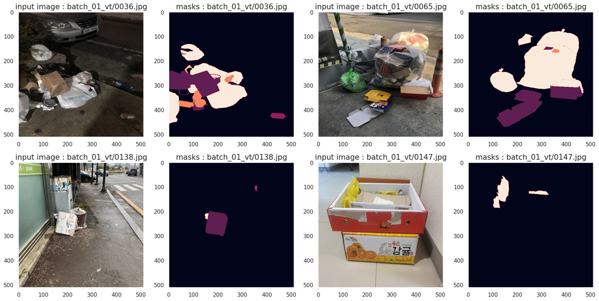

프로젝트 개요
설명
-
바야흐로 대량 생산, 대량 소비의 시대. 우리는 많은 물건이 대량으로 생산되고, 소비되는 시대를 살고 있습니다. 하지만 이러한 문화는 ‘쓰레기 대란’, ‘매립지 부족’과 같은 여러 사회 문제를 낳고 있습니다.
-
분리수거는 이러한 환경 부담을 줄일 수 있는 방법 중 하나입니다. 잘 분리배출 된 쓰레기는 자원으로서 가치를 인정받아 재활용되지만, 잘못 분리배출 되면 그대로 폐기물로 분류되어 매립 또는 소각되기 때문입니다.
-
따라서 우리는 사진에서 쓰레기를 Segmentation하는 모델을 만들어 이러한 문제점을 해결해보고자 합니다. 문제 해결을 위한 데이터셋으로는 배경, 일반 쓰레기, 플라스틱, 종이, 유리 등 11 종류의 쓰레기가 찍힌 사진 데이터셋이 제공됩니다.
-
여러분에 의해 만들어진 우수한 성능의 모델은 쓰레기장에 설치되어 정확한 분리수거를 돕거나, 어린아이들의 분리수거 교육 등에 사용될 수 있을 것입니다. 부디 지구를 위기로부터 구해주세요! 🌎
평가
- Test set의 mIoU (Mean Intersection over Union)로 평가
-
Semantic Segmentation에서 사용되는 대표적인 성능 측정 방법
-
IoU
-
프로젝트 팀 구성 및 역할
- T4063 김형석
- [SMP] Baseline code 개발, WandB 연동, Scheduler 적용, AMP 적용, 실험결과 Notion API로 자동 기록, Focal Loss + Label Smoothing 구현, Model searching, SwinTv2 encoder 구현, UpperNet decode 구현, Hard voting Ensemble 구현
- T4148 이동훈
- smp, mmseg 모델 탐색
- T4190 전지용
- Data EDA, [MMSeg] Baseline Code 개발, Loss Function Searching, Model searching, Inference 기법 연구, Model Ensemble
- T4199 정원국
- Wandb , smp swint 구현, multi-loss , Panet 튜닝 , Model searching, 후처리, 전처리
- T4226 한상준
프로젝트 수행 절차 및 방법
1. 협업 환경
-
Code management : GitHub

-
Git branch strategy : GitHub Flow

-
Experiment tracking tool : WandB
-
Project Management : Notion, Slack, Zoom

2. 대회 접근 전략
-
EDA
-
SMP 기본 모델을 사용한 Augmentation 결정
-
SMP와 MMSegmentation 사용, 개별적인 Model Searching
-
WandB, Notion을 사용한 실험 결과 관리
3. 수행 과정
-
EDA → Model Search → Ensemble
프로젝트 수행 결과
1. Data EDA
-
Data Imbalance 문제
-
카테고리 별 annotation 분포

- paper, plastic bag, plastic, General trash에 비해 Styrofoam, Paper pack, Glass, Metal, Clothing, Battery의 annotation 수가 적음
-
-
Annotation 특징
-
카테고리 별 Annotation 크기

- 픽셀 단위의 아주 작은 Annotation 다수 존재
- 사진의 크기와 유사한 매우 큰 Object 존재
- Clothing, Battery의 경우 크기가 안정되어있지만 Styrofoam, Paper pack, Glass, Metal의 경우 크기마저 불안정한 모습을 보임
-
카테고리 별 Annotation 위치 및 크기 비교

- object는 대부분 중앙에 크게 존재하고 가장자리로 갈수록 크기가 작아짐
- 크기가 작은 Annotation 중 이미지의 가장자리에 속한 것들은 물체가 잘린 것으로 추정
-
-
데이터 시각화

- 데이터 셋 분석
- 라벨링 기준이 모호하다.
- 일반 쓰레기의 기준, 박스와 종이, 테이프 기준
- 얼마나 세부적으로 라벨링을 할 것인지
- 한 물체에 포함된 물체에 대한 기준 (ex. 페트병에 감싸진 비닐)
- 투명한 이미지
- 병, 페트병, 비닐 등 투명한 이미지에 대한 오류가 심할 것 같음
- Small Object
- 사람 눈으로도 인식이 되지 않는 작은 물체가 존재
- 라벨링 오류
- 데이터 라벨링이 잘못 되어있거나 심한 경우 라벨링이 되어있지 않은 경우도 존재
- 라벨링 기준이 모호하다.
- 데이터 셋 분석
-
결론
- 데이터 클린징 작업은 의미가 없을 것 이라 추정
- Test 데이터도 비슷하다고 가정
- Data Imbalance 문제를 해결하기 위한 기법 연구 필요
- Segmentation 문제에서 물체의 모양을 잘 맞추는 것 보다 물체의 클래스를 잘 맞추는 것이 우선이 되어야 함
- 라벨링 오류와 같은 Noise에 대한 해결 방안이 필요
- 데이터 클린징 작업은 의미가 없을 것 이라 추정
2. Model Search
SMP와 MMSegmentation Baseline Code를 작성하고 모델을 찾음
-
SMP (Segmentation Models Pytorch)
Architecture Backbone Validation Score Test Score 특이사항 UNet Efficientb2 0.4989 0.4844 Color Aug 사용 UNet Efficientb2 0.6244 0.5452 Color Aug 미사용 UNet Efficientb3 0.6356 0.5715 Color Aug 미사용 UNet Efficientb4 0.6335 0.5698 Color Aug 미사용 MAnet Resnext50 0.5495 - - PSPNet Efficientb3 0.4296 - - Linknet Efficientb3 0.3661 - - Deeplabv3 Resnet101 0.5831 - - FPN Resnet101 0.5962 - - FPN Efficientb3 0.6547 0.5995 - FPN Efficientb3(Timm) 0.6286 0.6073 - FPN SwinTv2 0.2856 - 가중치 미사용 FPN SwinTv2 Crs224 0.5757 - - FPN SwinTv2 w24i384 0.713 0.6212 - UpperNet SwinTv2 w24i384 0.7083 - - PAN SwinTtiny 0.729 0.68 PAN SwinTtiny 0.72 0.66 ==→ Backbone의 경우 Swin Transfomer v2가 가장 우수했고, Segmentation Model의 경우 PAN이 가장 우수한 성능을 보였다.==
-
MMSegmentation
Architecture Backbone Validation Score Test Score 특이사항 Segformer MIT-b0 0.6158 - UperNet Swin_Tiny 0.6217 - PointRend ResNet101 0.6394 - Architecture 전체 Pretrained 가중치 KNet+UperNet Swin_Large 0.75 0.7009 UperNet Swin_Large 0.7369 0.711 Augmenation 적용 PointRend Swin_Large 0.75 0.7118 Segmentor vit_tiny 0.66 매우 빠른 학습시간 Segmentor vit_small 0.69 0.60 UperNet beit 0.13 매우 긴 학습시간 ==→ Backbone의 경우 Swin Transfomer Large가 가장 우수했고, UperNet 모델과 PointRend의 장단점이 확실히 나뉘어졌다.==
3. Train
- Augmentation
- Noise Augmentation
- Noise의 경우 파라미터가 적고 학습이 쉬운 Efficient model의 경우 큰 의미가 없었다.
- 그러나 파라미터가 크고 많은 feature를 보게 되는 경우 학습을 지연 시키면서 더 많은 부분을 학습하게 만들어 큰 효과를 이루었다.
- Noise Augmentation
- Loss Function
- DiceCE Loss
- Dice Loss
- 데이터 불균형 특징이 존재하는 semantic segmentation network 구조에 많이 사용되는 손실 함수
- 데이터 특성 상 Background가 많이 존재하며 데이터 불균형이 심하게 보이므로 Dice Loss 사용
- Cross Entropy loss와 Dice loss를 가중치를 두고 혼합하여 DiceCE Loss 구현
- Cross Entropy loss (0.75) + Dice loss (0.25)
- Cross Entropy loss를 활용하여 정확도를 향상시키고 Dice loss를 활용하여 Class Imbalance 문제를 해결
- Dice Loss
- DiceCE Loss
- Sweep
- lr , batch, optimizer, Augmentation
- Sweep을 통해 파라미터 튜닝을 진행하여 성능 향상을 이루었다. miou 0.58 → 0.61
- lr , batch, optimizer, Augmentation
4. Inference
- Inference Input size
- Input size를 Model input size(default : 512 x 512)로 변환하여 Inference 진행
- Inference 진행 후 Mask 이미지를 (256, 256)으로 변환
- 결과 이미지는 (256, 256)으로 고정
- TTA
- Multi Scale
- Test시 이미지 크기를 0.5~1,75 배율로 조절하여 TTA 진행
- Filp
- Test시 RandomFlip을 사용하여 TTA 진행
- Multi Scale
- Post Processing
- pixel threshold
- 전체적으로 Clothing을 GeneralTrash로 착각하는 경우가 많다는 걸 파악
- Pixel 단위에서 GeneralTrash threshold 가 0.6 이하인 경우 0으로 처리
- 결과적으로 mIou 0.02~0.05 상승 → Clothing의 경우 0.1까지도 상승
- pixel threshold
5. Model Ensemble
- MMSegmentation Model Ensemble
- MMSegmenation으로 학습된 모델에 대한 앙상블 기법
- 앙상블 할 모델을 모두 추론하여 픽셀 별 Confidence score가 높은 Class를 선택
- Hard voting Ensemble
- Inference를 통해 생성된 csv파일을 Hard voting 방식으로 Ensemble, 동률의 투표 결과가 나왔다면 Submission Score가 높은 모델의 결과를 반영
- 결과
- ==[0.7118]SwinL&Pointrend + [0.7057]SwinL&Upernet + [0.6800]SwinTtiny&PAN → 0.7278(Best)==
- [0.7093]SwinL&Pointrend + [0.7110]SwinL&Upernet + [0.6800]SwinTtiny&PAN → 0.7247
자체 평가 의견
1. 결과 분석
- Augmentaion이나 Hyperparameter Tuning등의 기법보다 성능이 좋은 SOTA Model를 찾는 것이 더 좋은 결과를 얻었다
- Ensemble의 경우, 여러 Model의 결과를 Ensemble한 것이 미소하지만 더 좋은 결과를 얻었다.
2. 회고 및 향후 개선점
- 성장 포인트 회고
- 지난 대회와 비교하여, 실험 기록을 Notion 에 자동으로 기록하는 코드를 작성하는 등 실험 기록의 자동화를 통한 편의성 향상을 이루었다.
- 협업을 더 원활하게 하기 위해 Github을 더 적극적으로 사용하였다. (Pull Request, Issue Tracking)
- 좋았던 점
- 실험 기록들을 기반으로 점진적인 성능 향상을 이루었다.
- 각자 실험할 부분을 명확하게 나누어서 실험이 진행되었고 결과가 잘 공유되었다.
- 대회 종료 시까지 집중하여 성능을 끌어올릴 수 있는 모델을 계속 탐색하였고, Ensemble을 통해 더 높은 점수를 이끌어 낸 점은 잘 되었다고 생각한다.
- 아쉬운 점
- SOTA Model을 선정하는 것이 가장 큰 성능 향상 요소였는데, 다른 실험에 몰입하여 많은 실험을 진행하지 못했다.
- 가벼운 모델을 이용하여 Augmentation 기법 탐색 등 다양한 실험을 하여 의사 결정을 하는 방법에 있어서, 어설프게 잘못 알고 있는 상식으로 이를 절대 진리로 생각하여, 모델의 학습 결과를 평가함에 있어서 논리 근거가 충분하지 못한 추정으로 잘못된 문제 정의를 하는 경우 해결책을 찾아갈 수 없음을 다시금 느끼게 되었다.
- Segmentation Models PyTorch와 MMSegmentation 이외에도 Detectron2, PaddleSeg 또는 커스텀 모델들을 더 적극적으로 활용하여 SOTA 모델을 포함한 많은 모델을 실험해보았어야 했지만 이런 부분에서 협업이 원활하지 못하였다.
- 대회를 시작하며 각자 하고 싶은 기법은 모두 사용해보는 Wish list를 작성하였는데 이를 모두 실험해 보지 못하였다.
- 향후 개선점
- 프로젝트 진행을 원활하게 하기 위해 PM과 팀원의 역할을 명확히 정의하고, 협업 방식을 개선하여야 하겠고, Github Flow 등 협업에 관련한 컨벤션을 정하여 팀원 모두가 적극적으로 참여할 수 있도록 해야하겠다.
- 모델의 학습 결과를 평가함에 있어서 논리 근거를 충분히 하기 위하여, 각 실험에 관련한 논문을 읽고, 다양한 가설을 세워 어떤 문제 때문에 학습이 잘 되지 않는지 실험하여 근거와 결과를 바탕으로 의사 결정을 하는 자세를 지향해야 하겠다.
재활용 품목 분류를 위한 Semantic Segmentation - Wrapup Report - 개인 회고
개인 회고 T4148 이동훈 - Segmentation
개인 회고 T4190 전지용 - Segmentation
개인 회고 T4199 정원국 - Segmentation